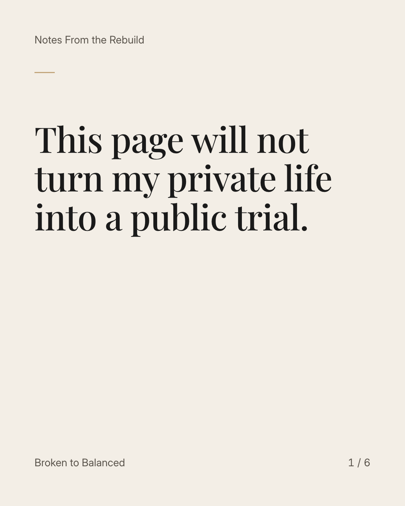
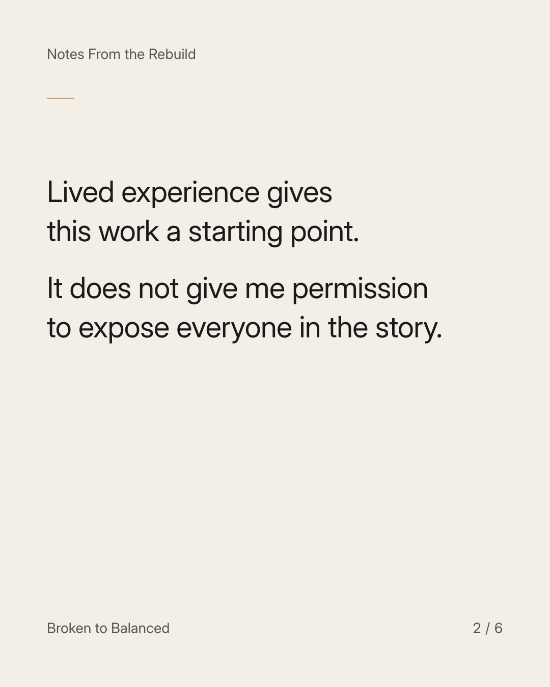
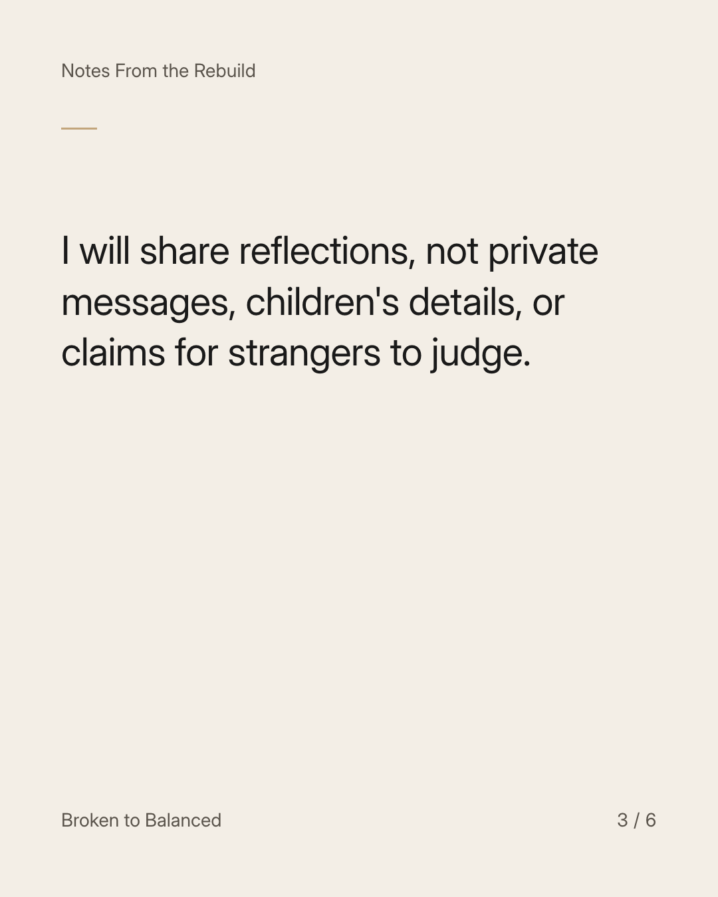
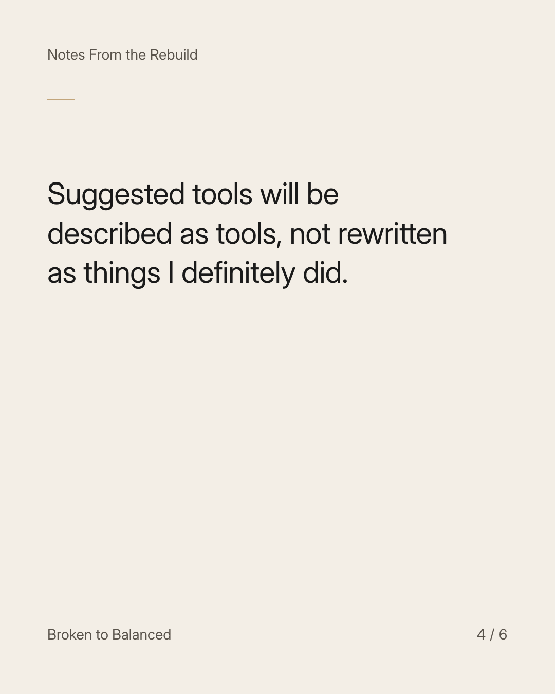
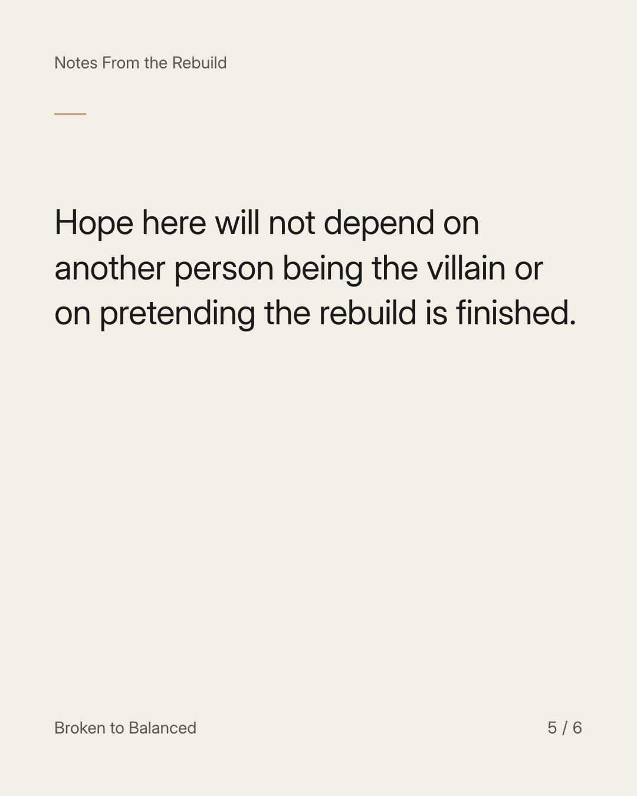
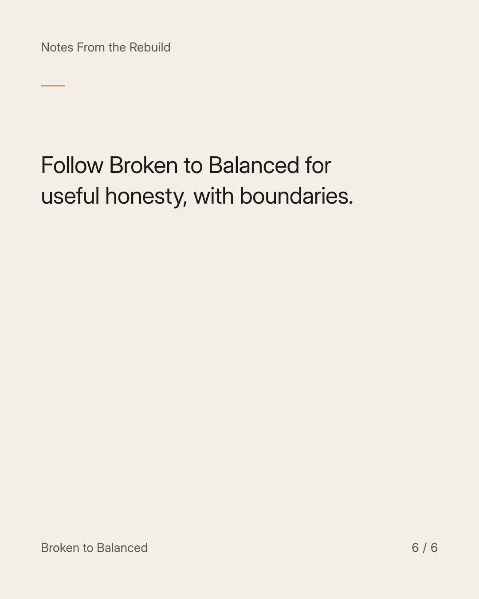

Exact text and accessibility text
This page will not turn my private life into a public trial.
Slide 1 of 6. This page will not turn my private life into a public trial.


Exact text and accessibility text
Lived experience gives this work a starting point. It does not give me permission to expose everyone in the story.
Slide 2 of 6. Lived experience gives this work a starting point. It does not give me permission to expose everyone in the story.


Exact text and accessibility text
I will share reflections, not private messages, children's details, or claims for strangers to judge.
Slide 3 of 6. I will share reflections, not private messages, children's details, or claims for strangers to judge.


Exact text and accessibility text
Suggested tools will be described as tools, not rewritten as things I definitely did.
Slide 4 of 6. Suggested tools will be described as tools, not rewritten as things I definitely did.


Exact text and accessibility text
Hope here will not depend on another person being the villain or on pretending the rebuild is finished.
Slide 5 of 6. Hope here will not depend on another person being the villain or on pretending the rebuild is finished.


Exact text and accessibility text
Follow Broken to Balanced for useful honesty, with boundaries.
Slide 6 of 6. Follow Broken to Balanced for useful honesty, with boundaries.
Exact caption
Plain-text fallback: select and copy the caption.